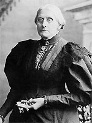

|

|

|
|
|
Teacher, temperance advocate, abolitionist and
suffragist, Susan Brownell Anthony was born on February 15, 1820
in Adams, Massachusetts to Quaker parents.
As a young woman Anthony worked as a teacher for fifteen
years. While an educator she became an active participant in
the temperance movement, which advocated making alcohol
illegal. Anthony's passion for advocacy led to
abolitionism, and eventually to joining the women's rights
movement in 1852. Along with fellow activist Elizabeth Cady
Stanton, Susan B. Anthony sponsored annual conventions where
discussion of equal political, legal and property rights for
women took place.
Anthony worked as an agent for American Anti-Slavery
Society in 1856 campaigning for abolition. And in response
to the Abraham Lincoln's Emancipation Proclamation, Anthony
and Stanton established the Woman's National Loyal League to
work to emancipate slaves in the southern states where the
Union policy did not reach. She also gathered 400,000
signatures petitioning Congress to pass the 13th Amendment
to the Constitution.
In 1866, Anthony founded the American Equal Rights
Association. Its platform linked the necessity of voting
rights for African Americans to women's suffrage. Passage
of the 14th and 15th Amendments were therefore huge
disappointments for Anthony and her followers. The inclusion
of the word "male" into the 14th Amendment and the exclusion
of the word "sex" from the 15th Amendment were specifically
meant to keep women from claiming the right to vote.
Anthony and Stanton felt they had been betrayed by African
American activists and Radical Reconstruction leaders, who
decided that the inclusion of women in either of the
amendments would ultimately result in defeat of them both.
The leadership of the suffrage movement split in the late
1860s, with Anthony and Stanton joining the National Woman
Suffrage Association (NWSA), while more moderate feminists
like Lucy Stowe, Julia Ward Howe and Henry Blackwell formed
the American Woman Suffrage Association (AWSA). In 1868, the
NWSA began publishing the newspaper Revolution, which became
a leading forum for feminist issues including suffrage and
divorce. In its pages, NWSA leaders Anthony and Stanton
argued for the passage of a 16th amendment guaranteeing
women's suffrage. Their main argument, criticized in some
quarters for its racism, was that allowing white women to
vote would prevent immigrants and blacks from gaining
political clout.
In 1890 the two wings of the women's rights movement
rejoined as the National American Woman Suffrage Association
(NAWSA) to refocus attention on the right of women to vote.
Susan B. Anthony once again emerged as a national leader for
the suffrage movement. However, she was compelled to
curtail her activities due to her age, and a new generation
of feminists took over leadership of the movement. Anthony
died on March 13, 1906 in Rochester, New York. Fourteen
years later, Congress passed the 19th Amendment to the
Constitution which guaranteed suffrage for all United States
citizens regardless of gender.
Source: Joan Waugh for the History 139A website.
|